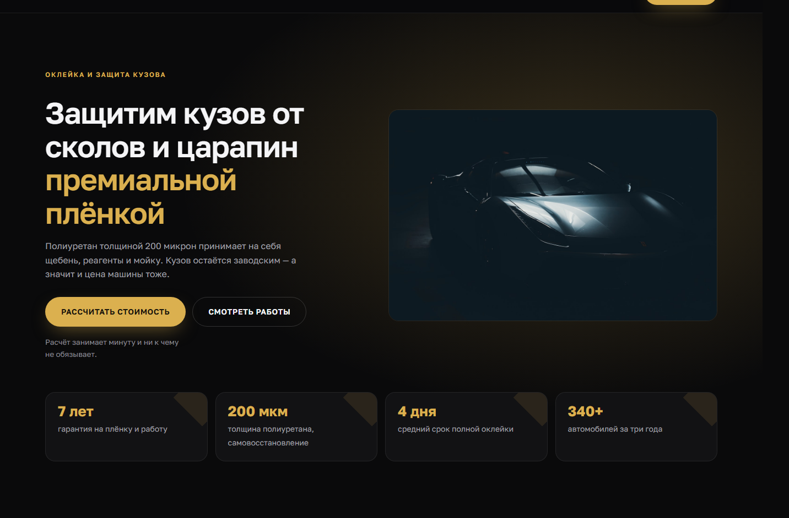
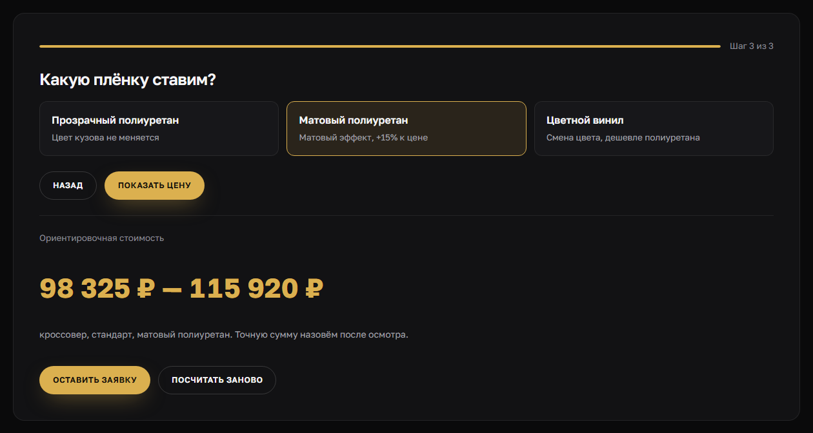

Кейс · многостраничный сайт
ARMORA — сайт студии оклейки авто
Защитная плёнка стоит от двадцати тысяч до четверти миллиона, и первый вопрос у каждого один: сколько это будет стоить мне. Сайт отвечает на него за три клика, до звонка и до осмотра.
- 6страниц: услуги, работы, о студии, контакты, политика
- 3шага калькулятора до цены
- 427текстовых элементов проверено на контраст
- 0зависимостей: ни фреймворка, ни сборки
Задача
Заказчик прислал концепт с Behance и попросил такой же сайт. Концепт сильный: тёмная основа, машина в зареве, крупная типографика. Но это был макет одной страницы — картинка, а не работающий сайт.
Из макета надо было сделать то, что умеет принимать заявки: собрать вёрстку, оживить калькулятор, развести содержимое по страницам и проверить, что всё это читается и работает.

Калькулятор
Главный механизм сайта. Три вопроса: класс автомобиля, что оклеиваем, какая плёнка. После третьего — цена.
Клик по варианту его выбирает, а шаг переключает кнопка «Далее». Два действия вместо одного намеренно: человек видит, что именно он выбрал, и может передумать до перехода. Кнопка заблокирована, пока выбора нет, — так нельзя проскочить вопрос и получить цену из воздуха.

Показывать одну цифру до осмотра кузова было бы враньём: реальная сумма зависит от состояния краски и от того, сколько придётся готовить. Вилка честнее — и она же не отпугивает точностью, которой не существует.
Смена акцента починила контраст
В концепте акцент малиновый. Собрал в нём — и упёрся: малиновый как текст даёт 4.14 при норме 4.5. Пришлось раздваивать акцент: один оттенок для заливки кнопок, второй, осветлённый, для мелкого текста. Работает, но система усложняется на ровном месте.
Потом заказчик попросил заменить малиновый на золотой. Замерил заново:
| Акцент как текст | Контраст |
|---|---|
| Малиновый на карточке | 4.14 |
| Малиновый осветлённый | 5.85 |
| Золотой на карточке | 9.21 |
Золото проходит норму вдвое, и раздвоение стало не нужно — оба токена указывают на один цвет. Разделение я оставил в коде: смена акцента снова возможна одной строкой, если он опять окажется тёмным.
Заодно пришлось ослабить зарево под машиной с 0.30 до 0.22 — золото светлее малинового, и на прежней плотности фон уходил в грязно-жёлтый.
Из одной страницы в шесть
Лендинг отвечает на вопрос «что вы делаете». Сайт студии, куда пригоняют машину за двести тысяч, должен отвечать ещё на несколько: кто работает, где бокс, что будет, если плёнку порвать.
- Услуги — комплексы, таблица классов автомобилей, материалы и шесть частых вопросов;
- Работы — восемь машин, по каждой комплекс, плёнка и срок;
- О студии — как устроена работа, команда и отдельный блок «чего мы не делаем»;
- Контакты — адрес, часы, форма заявки, как доехать.
Главную связал с ними не только меню, но и переходами из разделов. Без этого внутренние страницы становятся сиротами: в меню есть, а из содержимого не найти.
Карту не встроил
Чужой картографический скрипт тянет мегабайты и ставит куки без согласия посетителя. На его месте — адрес, описание проезда и кнопка открыть в любимом сервисе. Страница от этого только быстрее.
Как проверялось
Написал обход всех шести страниц: он считает контраст каждого текстового элемента с учётом реального фона, ищет горизонтальный скролл, картинки без подписи и ошибки консоли.
- 427 текстовых элементов — ниже нормы контраста ни одного;
- 91 внутренняя ссылка и якорь — все ведут в существующие места;
- горизонтального скролла нет, у всех картинок есть подписи, на каждой странице ровно один заголовок первого уровня.
Инструмент проверки пришлось проверять четыре раза
Первый прогон показал десяток нарушений. Полез смотреть — на всех подозрительных местах контраст оказался нормальным. Ошибался не сайт, а моя же проверка, и каждый раз по-новому:
| Что показала проверка | Что было на деле |
|---|---|
| Тёмный текст на тёмном, 1.11 | Прозрачный фон считался чёрным |
| Белый текст на золоте, 1.87 | Плашка в 12% золота считалась сплошной |
| Тёмный текст на тёмном, 1.05 | Кнопка залита градиентом, а не цветом |
| Белый текст на белом, 1.12 | Полупрозрачное зарево принято за фон |
Каждый раз причина была одна и та же по сути: браузер рисует фон слоями, а проверка читала только верхний. Теперь она собирает слои, смешивает полупрозрачные так же, как это делает браузер, читает градиентную заливку и отличает её от декоративной накладки.
Если бы я поверил первому прогону, то полез бы чинить работающую вёрстку — и сломал бы её. Отчёт автоматической проверки — это список мест, куда надо посмотреть, а не список того, что надо исправить.
Зато нашлась настоящая
Ту же проверку я прогнал по своему портфолио — и там нашёлся реальный дефект: цвет мелких подписей давал 4.03 при норме 4.5. Им набраны названия технологий, сроки в тарифах и метки контактов, то есть проблема сидела на главной, в блоке цен.
Поднял цвет и наткнулся на тонкость: промежуточное значение прошло везде, кроме выделенного тарифа — у него подложка светлее остальных карточек. Проверять надо по самому светлому фону, а не по основному. Итог — 4.89 на худшем фоне и чисто на всех страницах.
Стек
Ни фреймворка, ни сборщика: шесть страниц, один файл стилей, один файл скриптов. Единственный внешний домен — шрифты.
Работа учебная, не по заказу клиента: студия вымышленная, фотографии со стока. Интерфейс — реализация чужого дизайн-концепта: Landing Page auto | Сайт оклейка авто, автор макета Татьяна Кирхеснер. Вёрстка, калькулятор, внутренние страницы и золотая палитра — мои.
Нужен сайт, который считает и принимает заявки?
Калькулятор снимает половину звонков «а сколько стоит» и приводит человека уже с цифрой в голове. Расскажите, из чего складывается ваша цена, — соберу такой же расчёт под вашу услугу. Разбор бесплатный.